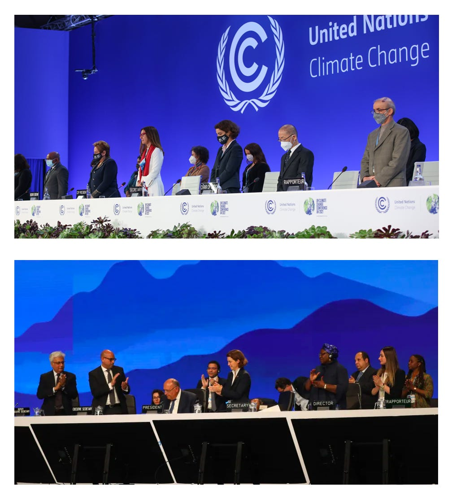

The 27th annual Conference of the Parties to the United Nations Framework Convention on Climate Change, aka COP27, closed a little over a week ago. I spell out the complete name because it mirrors the sordid history of this geopolitical kabuki farce. Yes, it was 27 years ago (March-April, 1995) that the first of these “conferences” was held in Berlin, Germany, less than five years after the reunification of that nation. And 27 years from now, if we heed the guidance of the scientists responsible for recommending actions to avoid a climate catastrophe, the world’s nations will have embraced the Paris accords and united to achieve the goal of “engineering net zero” (halting the increase of CO2 in the atmosphere altogether). I don’t think I’m being too negative if I call “bullshit!” on this vision.
In honor of football season (both American and World Cup): “It’s already halftime, and we’re still arguing about the rulebook.”
A year ago, I wrote:
COP26 is now over, and, like its 25 predecessor “Conference of Parties”, it’s produced a series of toothless political commitments that are loosely based on recommendations given by large teams of scientists. Sadly, such approaches, while intellectually honest, are seriously limited in scope, and thus doomed to failure in the long run. Given the continued naive commitments of our leaders, I must now propose a more aggressive pitch:
One planet. One solution. Now.
That’s intentionally provocative, but not prescriptive. No serial and no one person can possibly provide all the answers. But we must prepare to act with clear-headed decisions—any partial solution should bring the rest of the solution to the table as well, including what the tradeoffs are. We won’t get too many chances to get it right.
Vox clamantis in deserto.1
The grand pronouncement of a year ago fell in the wake of another word smörgåsbord title, the Sixth Assessment Report of the Intergovernmental Panel on Climate Change (aka IPCC AR6), which I’ve covered in earlier installments. Looking at the output of the most recent one, COP27, I think I may have been too generous in granting the label of “intellectually honest” to the parties’ general approach. Nevertheless, the brand still pertains to the scientific recommendations that formed the basis of the COP26 outcome, in which the Nations of Earth united to agree, “We have an urgent problem to solve.” I’m not sure why that would be news after so many years, but so it goes.
So, here’s a quiz: In the photo below, which is COP26 and which is COP27?

Several visual cues, the logo, the masks, etc., make it pretty easy to figure out—the top one is COP26 (Glasgow), and the bottom is COP27 (Sharm El-Sheikh). That’s not the point of the quiz, though. In both photos, there’s a panel of leaders on a dais against a blue background, all for show. Nothing has changed.
As a critic of the COPs, I’m not a lone voice in the wilderness. Here’s a critics’ review of the resulting agreement, contemporary with the close of COP26:
The adoption of the Glasgow Climate Pact did not come easily. A much-contested clause to phase out coal and end fossil fuel subsidies was changed at the last moment, at the insistence of India. It offered a new formulation on the “phase-down” of coal. Other Parties accepted this, but grudgingly, at best. Switzerland called the new language “watered down” and said, “This will not bring us closer to 1.5, but it may make it more difficult to reach it.” The Marshall Islands and others said they would accept the change “with the greatest reluctance”.
That was not the only issue that did not please many parties. “By no means perfect,” said China. “Least-worst agreement,” said New Zealand. “We still have issues and deep concerns,” said Bolivia. “Text on the table makes us uncomfortable,” said Grenada. India felt that the agreement was unfairly calling for developing countries to take actions that could threaten their development. But almost every country affirmed that while the outcome was far from perfect, the alternative – walking away with no agreement – would be worse.2
So, a transformational agreement based on scientific evidence was discussed for two weeks among supposedly influential people, then at the last minute, was castrated by a single dissenting country, India. Naturally, this made the engineering objective harder to reach, but “Hey, any agreement is better than no agreement, right?” If only Nature were willing to be patient with our dithering!
Looking more closely, India’s objection boils down to economics—to continue to grow its economy, that populous country must expand its electricity supply to meet demand and cannot do that without baseload coal. I’m pretty sure they looked long and hard at solar PV (allegedly cheap enough to replace coal in the US) and must have decided it wouldn’t work for them, despite extensive academic prognostication. That’s unfortunate since coal plants produce electricity for 50 years or more before being decommissioned. Unless India is willing to walk away from its “investment” in coal, these plants will add CO2 well past the technological deadline. Switzerland was being diplomatic—it’s not making it more difficult. It’s making it damned near impossible.
So now a year has passed, and with it, another COP out. The through-line is still global economics, with the headline news (also better than no agreement):
Governments took the ground-breaking decision to establish new funding arrangements, as well as a dedicated fund, to assist developing countries in responding to loss and damage. Governments also agreed to establish a ‘transitional committee’ to make recommendations on how to operationalize both the new funding arrangements and the fund at COP28 next year. The first meeting of the transitional committee is expected to take place before the end of March 2023.
So, what are these “new funding arrangements” to “assist developing countries”? To my ear, it sounds like a mechanism for global income redistribution. That won’t get enough support in the U. S. Congress (at least so long as there is a viable Republican Party) to amount to anything, particularly if the fund expects the United States to pay anything close to the amount needed. I can already hear Sen. Manchin (D-WV) denouncing a plan to send significant dollars overseas when there are poor people in West Virginia.
But how much are we talking about here?
Well, specifics are lacking—the decision was to establish a fund, not to fund it.
One statement stands out, though, “a global transformation to a low-carbon economy is expected to require investments of at least USD 4-6 trillion a year. Delivering such funding will require a swift and comprehensive transformation of the financial system and its structures and processes, engaging governments, central banks, commercial banks, institutional investors, and other economic actors.’ That’s not just a lot of money. That’s more than all the money in the world! [I’m not exaggerating: there is just under US$2.3 trillion cash in circulation today.] And we’ve got 27 years to go, so we’re talking over $100 trillion. And these geniuses tell us that’s the minimum. Sheesh!
You’re probably saying, “It’s an investment, though! It’s not like the money is gone or anything.” True enough. But there’s a material difference between a government “investment” and a private one. Governments tax and spend without expecting a tangible (monetary) award, while private concerns choose investments based on an expected rate of return. Which one are we talking about? Most utilities are private, so I speculate that it’s the latter. It’s also likely to be debt rather than equity, so we’re talking utility bonds, with Government choosing not to tax the private “investment” returns as a reward.
To scale COPout’s proposed investment, the American Public Power Institute crows that “Tax-exempt municipal bonds have financed $2.5 trillion in new investments in infrastructure over the last decade,” so we’re talking about diverting more than a decade of expenditure every single year. Possible? Sure. But every movement of private money reflects a choice—if it is invested in utilities, then it’s not invested in, say, buildings or roads. So which bonds suffer because of the diversion? Who knows.
It’s a choice, not asking Daddy for access to his bank account. Is it likely? Up to you to decide.
From the Vulgate Bible, Isaiah 40:3. Translation: “A lone voice crying out in the wilderness.” Also, the motto of Dartmouth College, founded back when eastern New Hampshire was ‘wilderness’.
COP26 Day 13: An agreement to build on, accessed 12-3-2022.